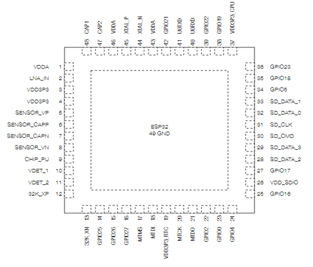
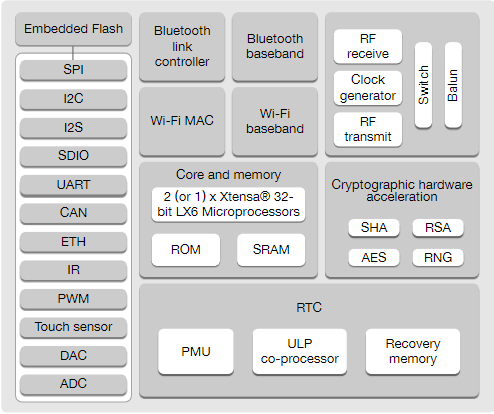

SafeZone busca abordar la falta de soluciones específicas y accesibles para mujeres vulnerables que enfrentan el riesgo de robos y emergencias. A través de una aplicación móvil y una manilla de seguridad, brindamos una forma rápida y efectiva de solicitar ayuda, estableciendo una comunidad de apoyo y promoviendo la conciencia sobre los derechos de las mujeres. Además, colaboramos con las autoridades locales para garantizar respuestas rápidas en casos de emergencia y proporcionamos soporte técnico para un uso efectivo de la solución.
Beneficios de mi proyecto:
SafeZone es un proyecto que aborda una problemática que consideramos de vital importancia, la falta de una solución específica y rápida para solicitar ayuda en situaciones de robo o emergencia, especialmente para mujeres vulnerables como yo. A menudo, enfrentamos un mayor riesgo de ser víctimas de robos y necesitamos una forma efectiva de pedir auxilio. Actualmente, no existen herramientas adecuadas que nos permitan alertar a nuestros contactos de confianza y proporcionar nuestra ubicación precisa en tiempo real. SafeZone se convierte en una solución que puede marcar la diferencia en nuestra seguridad y bienestar..
El proyecto tiene como objetivo principal brindarnos seguridad y apoyo a través de una aplicación móvil y una manilla de seguridad. Esto nos permite solicitar ayuda en casos de emergencia, lo que es especialmente reconfortante. Pero va más allá: SafeZone busca crear una comunidad de apoyo en la que nos sintamos respaldadas y empoderadas. Además, promueve activamente la conciencia sobre nuestros derechos como mujeres, algo que es fundamental en la lucha por la igualdad de género. Además, la recopilación de datos estadísticos para mejorar continuamente la solución asegura que SafeZone esté siempre en sintonía con nuestras necesidades cambiantes. En resumen, SafeZone es un proyecto que no solo mejora nuestra seguridad, sino que también fortalece nuestra comunidad y nos ayuda a ejercer nuestros derechos.
Plano y funcionalidad de aparatos electrónicos
Este dispositivo es ideal para nuestro proyecto pues que las conexiones Bluetooth (v4.2 BR/EDR y bluetooth Low Energy (BLE)) es muy útil porque este tipo de conexión Bluetooth consume muy poca energía lo cual nos sirve tanto para el funcionamiento de la manilla como para la vida útil de la misma. Otro aspecto muy importante es la Seguridad tipo IEEE 802.11, WFA, WPA/WPA2 y WAPI, este tipo de seguridad es utiliza para el tratamiento de datos y nosotros como empresa no solo prometemos seguridad en la calle, sino que también le aseguramos al cliente que sus datos (ubicaciones, datos personales, etc.) estarán seguros con nosotros. Además, otros aspectos como Procesador Tensilica Xtensa 32bits LX6 hasta 240MHz, Criptografía soportada por acelerador de hardware: AES, SHA-2, RSA, ECC, RNG, entre otros. Estos aspectos además de ser muy usados por aplicación con WhatsApp o signal para el tratamiento de datos, también estos aspectos hacen que el microcontrolador prometa un uso seguro y viable para nuestro proyecto.
 